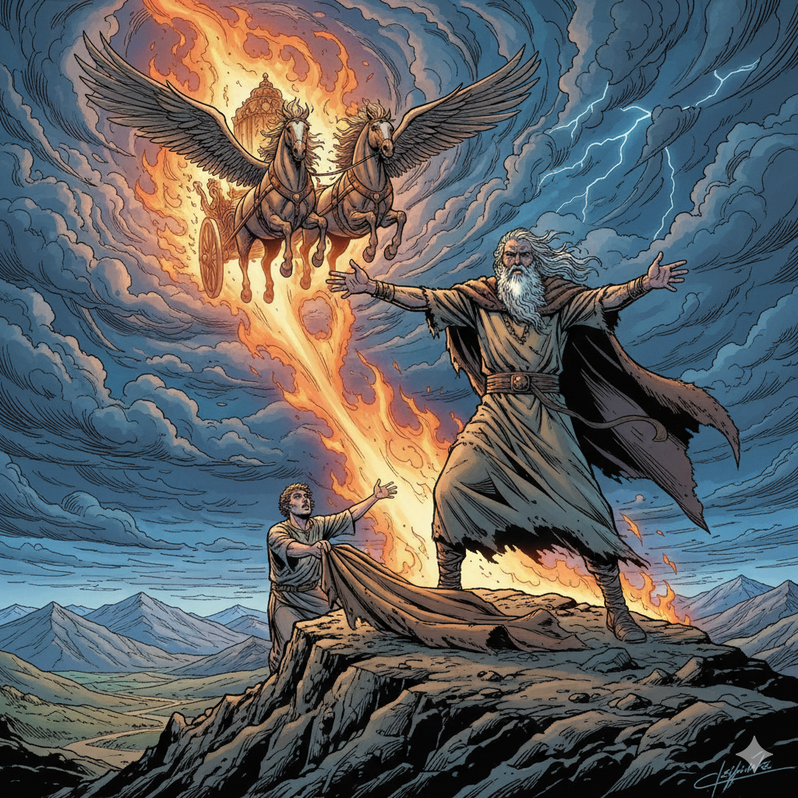

Elías - El profeta del fuego
Oración Inicial
"Señor Jesús, como el profeta Elías defendió tu nombre con valentía, ayúdanos a ser valientes para hacer el bien y defender la verdad. Que nuestro corazón arda de amor por ti como el fuego que bajó del cielo. Amén."
La Historia de Elías
Elías fue un gran profeta que vivió en tiempos del rey Acab. Cuando el pueblo adoraba dioses falsos, Elías los desafió en el monte Carmelo. Preparó un altar y pidió a Dios que enviara fuego del cielo. ¡El fuego de Dios consumió el sacrificio! Todos vieron que el Señor es el único Dios verdadero.
Elías también oró por lluvia después de tres años de sequía, y Dios escuchó su oración. Al final de su vida, Dios se lo llevó al cielo en un carro de fuego, mostrando que era un profeta muy especial y querido por el Señor.
Actividad Creativa
1. Dibuja el momento cuando el fuego de Dios bajó del cielo en el monte Carmelo:
2. Escribe una oración pidiendo valentía como Elías:
Reflexión
¿Cómo puedes ser valiente como Elías para defender lo que está bien?
¿Qué te enseña la historia de Elías sobre confiar en Dios?
Mensaje Principal: Dios escucha nuestras oraciones y nos da fuerza para ser valientes y defender la verdad.
Oración Final
"Dios todopoderoso, que escuchaste la oración de Elías y enviaste lluvia sobre la tierra seca, escucha también nuestras oraciones. Danos la fuerza para ser fieles a ti siempre. Por Jesucristo nuestro Señor. Amén."